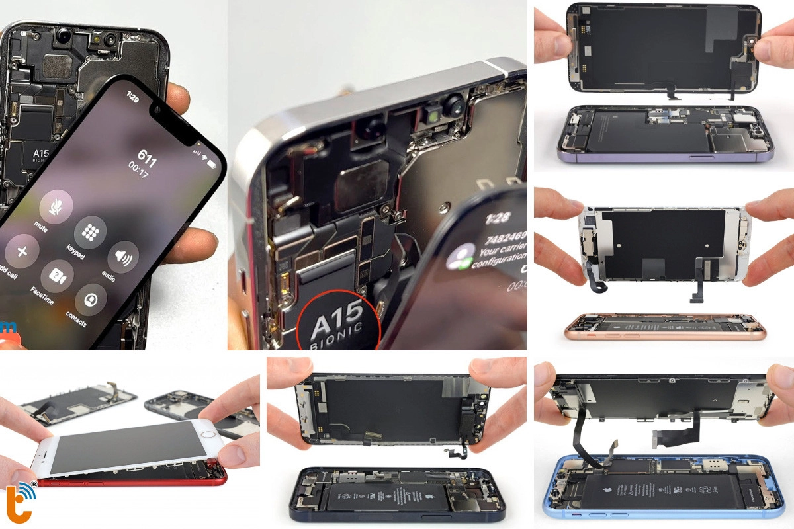

Thay Màn Hình Điện Thoại iPhone 6 Series - Lấy Liền, Giá Rẻ Tại TP.HCM
Thành Trung Mobile là địa chỉ tin cậy cho dịch vụ thay màn hình điện thoại iPhone 6 series (iPhone 6, iPhone 6s, iPhone 6 Plus, iPhone 6s Plus) tại TP.HCM. Với đội ngũ kỹ thuật viên giàu kinh nghiệm, chúng tôi cam kết mang lại dịch vụ thay màn hình iPhone chất lượng, giá rẻ và lấy liền ngay tại cửa hàng.
Khi Nào Cần Thay Màn Hình iPhone 6 Series?
Với các dòng iPhone 6, iPhone 6s, iPhone 6 Plus, những dấu hiệu rõ ràng cho thấy bạn cần thay màn hình bao gồm:
- Màn hình bị nứt, vỡ nghiêm trọng, không thể sử dụng cảm ứng được.
- Hiển thị bị mất màu, xuất hiện sọc dọc, sọc ngang, đốm sáng hoặc đen.
- Cảm ứng không nhạy, liệt phần cảm ứng hoặc toàn bộ màn hình.
- Màn hình không hiển thị dù máy vẫn còn hoạt động bình thường.
Xem thêm dịch vụ thay màn hình điện thoại
Thay Màn Hình iPhone 6 Series Giá Bao Nhiêu?
Tại Thành Trung Mobile, chúng tôi cung cấp dịch vụ thay màn hình iPhone 6, iPhone 6s, iPhone 6 Plus với mức giá rất hợp lý. Cùng với đó là sự minh bạch tuyệt đối trong báo giá, không phát sinh chi phí ẩn. Bảng giá chi tiết như sau:
- Thay màn hình iPhone 6: Từ 550.000 VNĐ
- Thay màn hình iPhone 6s: Từ 650.000 VNĐ
- Thay màn hình iPhone 6 Plus: Từ 700.000 VNĐ
- Thay màn hình iPhone 6s Plus: Từ 900.000 VNĐ
Liên hệ với chúng tôi qua hotline hoặc đến trực tiếp cửa hàng để được báo giá chính xác và nhận ưu đãi giảm giá lên đến 10%.
Thay Màn Hình iPhone 6 Series Có Ảnh Hưởng Gì Đến Máy Không?
Khi thay màn hình iPhone 6, iPhone 6s, iPhone 6 Plus tại Thành Trung Mobile, bạn hoàn toàn yên tâm vì:
- Màn hình thay thế là hàng chính hãng, đảm bảo chất lượng như màn hình zin.
- Quy trình thay màn hình không làm ảnh hưởng đến linh kiện bên trong máy hoặc dữ liệu của bạn.
- Được thực hiện bởi kỹ thuật viên có tay nghề cao, nhiều năm kinh nghiệm trong việc thay màn hình điện thoại iPhone.
Thời Gian Thay Màn Hình iPhone 6 Series Lâu Không?
Quy trình thay màn hình tại Thành Trung Mobile diễn ra nhanh chóng chỉ trong khoảng từ 30 phút đến 2 giờ. Bạn có thể ngồi chờ tại cửa hàng và nhận máy ngay sau khi sửa xong.
Thành Trung Mobile – Địa Chỉ Thay Màn Hình Uy Tín Tại TP.HCM
Thành Trung Mobile tự hào là một trong những địa chỉ sửa chữa điện thoại uy tín tại TP.HCM, chuyên thay màn hình cho các dòng iPhone, bao gồm iPhone 6 series. Các ưu điểm nổi bật của chúng tôi:
- Linh kiện chính hãng 100%, đảm bảo màn hình mới, không tái sử dụng.
- Kỹ thuật viên tay nghề cao, thực hiện công việc nhanh chóng và chính xác.
- Giá cả cạnh tranh, bảo hành dài hạn (6 tháng - 12 tháng tùy dòng máy).
Với nhiều chi nhánh tại TP.HCM, bạn có thể dễ dàng đến để thay màn hình iPhone 6 series mà không cần lo lắng về thời gian và địa điểm.
Thay màn hình iPhone 6s Plus tại Thành Trung Mobile
Quy Trình Thay Màn Hình Tại Thành Trung Mobile
Quy trình thay màn hình tại Thành Trung Mobile rất đơn giản và nhanh chóng:
- Tiếp nhận máy và kiểm tra tình trạng màn hình.
- Tư vấn phương án sửa chữa và báo giá chi tiết.
- Thay màn hình bằng linh kiện chính hãng, kiểm tra lại máy sau khi thay.
- Bàn giao máy cho khách, hướng dẫn bảo quản và cung cấp phiếu bảo hành.
Hướng Dẫn Bảo Quản Màn Hình Sau Khi Thay
Để bảo vệ màn hình mới thay, bạn cần chú ý những điều sau:
- Dán kính cường lực để bảo vệ màn hình khỏi trầy xước.
- Sử dụng ốp lưng có viền bảo vệ màn hình tránh va đập.
- Tránh để máy rơi, va đập mạnh hoặc tiếp xúc với nhiệt độ quá cao.
Vì Sao Nên Chọn Thành Trung Mobile?
Chọn Thành Trung Mobile là lựa chọn đúng đắn vì:
- Dịch vụ chuyên nghiệp, quy trình nhanh chóng và chính xác.
- Chất lượng đảm bảo với linh kiện chính hãng, bảo hành uy tín.
- Giá rẻ, lấy ngay không chờ đợi lâu.

Liên Hệ Thành Trung Mobile Ngay Hôm Nay!
Để thay màn hình iPhone 6, iPhone 6s, iPhone 6 Plus với giá tốt nhất và chất lượng dịch vụ tuyệt vời, hãy liên hệ ngay với chúng tôi qua hotline hoặc đến trực tiếp chi nhánh gần nhất. Đặt lịch hẹn ngay để nhận ưu đãi giảm giá 10%. Tham khảo thêm Dịch vụ thay màn hình điện thoại iPhone chính hãng các đời iPhone khác, lấy liền, giá tốt nhất!